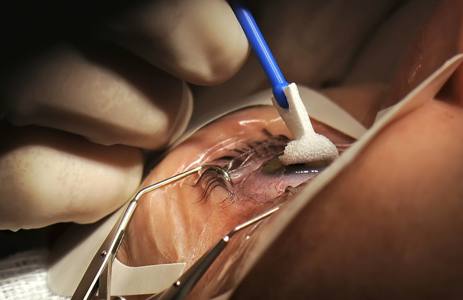

Agar Mata Kembali Jernih Ini Rekomendasi dari Dokter Mata.
Mata merupakan salah satu organ vital yang penting nilainya. Sebanyak 80% informasi didapat hanya dengan melihat. Namun, dengan banyaknya aktivitas yang melibatkan mata, banyak keluhan yang didapat.
Menurut Bourne (2017), bahwa secara global, diperkirakan jumlah orang dengan kehilangan penglihatan bilateral meningkat hampir tiga kali lipat dari 253 juta pada 2015 menjadi 702 juta pada 2050, karena pertumbuhan dan penuaan populasi di dunia. Di Indonesia sendiri gangguan penglihatan dan kebutaan juga terus engalami peningkatan dengan prevalensi sebesar 1,5% dan tertinggi dibandingkan dengan angka kebutaan pada negara–negara lain di Asia seperti Bangladesh sebesar 1%, India sebesar 0,7%, dan Thailand 0,3%. Gangguan penglihatan dan kebutaan tersebut beberapa disebabkan oleh glukoma (13,4%), kelainan refraksi (9,5%), gangguan retina (8,5%), kelainan kornea (8,4%), dan penyakit mata lain (Fauzi et al., 2016).
Operasi Mata di Jakarta
Salah satu dokter spesialis mata, dokter Suci Hana, mengatakan bahwa “Proses pengobatan mata paling banyak dilakukan melalui operasi mata. Namun akhir-akhir ini, banyak Rumah Sakit swasta di Jakarta mengalihkan sesuatu yang mudah untuk disembuhkan dengan operasi mata. Padahal, tidak semua pasien yang berobat memiliki banyak uang. Biaya operasi mata kerap dilipat-gandakan untuk profit mereka, dan lari ke kantong mereka.”
“Karena itu, banyak dokter yang merekomendasikan produk ini diam-diam ke pasien, agar tidak dituding macam-macam. Tentunya karena produk ini sudah terbukti dalam berbagai penelitian klinis. Bahkan di negara-negara maju sekalipun. Operasi tidak selamanya aman, makanya kami selalu merekomendasikan produk ini.”
Apa itu Vision dan Sejarahnya?
Dr. Suci Hana Spesialis Mata
Sesuai dengan rekomendasi dokter Suci Hana, produk ini adalah Vision. Kenapa Vision? Vision adalah produk pengobatan mata terbuat dari ekstrak bahan alami yang sangat terkonsentrasi dari tanaman paling bermanfaat untuk kesehatan mata. Ekstrak ini meningkatkan ketajaman penglihatan, memperkuat retina, melindunginya dari kerusakan penglihatan.
Bahkan, Vision diproses melalui teknologi dan inovasi terbaru. Ekstraksi nutrisi dari proses konvesional yang sudah ketinggalan zaman digantikan oleh teknologi ekstraksi dingin terbaru. Hal ini membuat efektivitas formula ini meningkat 70% karena ekstraksi dingin dapat mengawetkan zat aktif biologis penyembuh.
Sebenarnya Vision sudah lama dikembangkan, yaitu tahun 1993. Saat itu beberapa ilmuwan dan ahli mata ikut proyek ini selama 5 tahun sehingga lahirlah Vision.
Namun, proyek ini sempat berkendala dan berhenti sementara adanya kekurangan dana. Selang beberapa bulan, beberapa donatur tertarik proyek ini, mereka ikut mendanai proyek ini. Sampai akhirnya, produk ini 100% selesai pada tahun 2017.
Uji Klinis Vision
Vision pun sudah menjalani uji coba klinis pada akhir tahun 2020 di Pusat Penelitian Penyakit Mata. Sebanyak 4029 volunteer ikut dalam uji coba ini.
Hasil yang didapat
- 95% subyek – meningkatkan penglihatan hingga performa terbaik
- 85% subyek – menyembuhkan katarak pada tahap awal
- 98% subyek – tingkat kelembaban alami mata menjadi normal
- 90% subyek – hilangnya gejala hiperopia
- 90% subyek – prosedur operasi untuk penyakit glaukoma bisa dihindari
Manfaat Vision
Vision merupakan produk yang sudah teruji secara klinis. Adapun formula ini dapat digunakan untuk mengobati penyakit-penyakit mata berikut ini:
- Miopia,
- Kekeruhan kornea
- Peradangan kelopak mata
- Neuritis optik
- Uveitis
- Retinitis pigmentosa
- Glaukoma
- Katarak
- Chorioretinitis
- Ablasi retina
- Konjungtivitis
- Keratitis
- Radang saraf optik
- Dan banyak lagi
Vision juga dapat membantu:
- Pencegahan penyakit mata, termasuk miopia, glaukoma, dan katarak;
- Pemulihan dan mendukung kesehatan penglihatan;
- Melindungi mata dari kondisi tekanan yang meningkat (saat bekerja di depan komputer dan dampak negatif sinar UV);
- Menormalkan tekanan intraokular;
- Melindungi lensa mata, termasuk dari kekeruhan lensa mata;
- Meningkatkan ketajaman penglihatan;
- Meningkatkan kontras;
- Memperbaiki kerusakan sel yang terlibat dalam penglihatan;
- Melancarkan sirkulasi darah organ-organ penglihatan;
- Meredakan sindrom mata kering (Mata lelah, gatal, kemerahan, kering, pedih).
Hanya cukup meminumnya 2 kali sehari secara rutin selama 3-6 minggu.
Ini luar biasa! Jadi, di mana kita bisa membeli produk ini? Sayang sekali bahwa kami tidak dapat mencapai kesepakatan dengan pihak apotek tentang penjualan produk kami karena kebijakan penetapan harga. Oleh karena itu, orang yang ingin melakukan pemesanan dapat memesan Vision melalui formulir pemesanan resmi di bawah ini. Dan sekarang orang memiliki kesempatan untuk mendapatkan diskon 50% berkat bantuan organisasi amal. Hanya mengambil bagian dalam undian! Promosi akan berlangsung sampai
Formulir Resmi Untuk Pemesanan

Perhatian!
Pesan Vision dengan harga diskon Harga Lama Rp. 490.000
Harga Baru Rp. 150.000
LAKUKAN PEMESANANApakah Vision Membantu Anda
Anda perlu daftar untuk menilai.
Bunta
Putri saya minum kapsul ini secara teratur. Dia tidak memakai lensa kontak lagi.
Suka ‧ Balas ‧ 0 ‧
0 ‧
Adit
Aku baru saja dapatkan pesananku kemarin. Aku akan coba dulu dan lihat cara kerjanya, aku akan japri di sini.
Suka ‧ Balas ‧ 0 ‧
0 ‧
Puspa
Setelah minum produk ini selama dua minggu, rasa sakit di mata dan kemerahan mata hilang. Selain itu, saya bisa melihat lebih jelas, saya sangat senang.
Suka ‧ Balas ‧ 0 ‧
0 ‧
Priska
Aku cuma klik pesan. Lagi nunggu paket sampai.
Suka ‧ Balas ‧ 0 ‧
0 ‧
Thanty
Saya minum kapsul ini selama beberapa minggu sekarang. Penglihatan meningkat dari -125 menjadi 100. Terima kasih banyak!
Suka ‧ Balas ‧ 0 ‧
0 ‧
Esti
Saya pakai kapsul ini dalam terapi lengkap. Penglihatan saya telah sangat membaik. Ketajaman penglihatan sekarang normal.
Suka ‧ Balas ‧ 0 ‧
0 ‧
Kinkin
Saya minum Vision baru seminggu. Sekarang saya bisa melihat gambar dengan lebih jelas bahkan jika saya tidak memakai kacamata. Lingkaran hitam di bawah mata juga hilang kok
Suka ‧ Balas ‧ 0 ‧
0 ‧
Nora
Setelah penggunaan kapsul ini, penglihatan meningkat dari -175 menjadi -150
Suka ‧ Balas ‧ 0 ‧
0 ‧
Julia
Saya terkadang lupa minum kapsul secara teratur, tetapi penglihatan saya tetap membaik, saya pakai Vision dan penglihatan saya telah berubah dari -550 sekarang menjadi -200.
Suka ‧ Balas ‧ 0 ‧
0 ‧
Nurul
Semua orang, silakan datang dan bergabung dengan kami. Kemarin saya pergi untuk memeriksa penglihatan saya di salon optik. Sekarang suami saya sudah mulai minum produk ini. Tapi penglihatan suami saya tidak terlihat begitu buruk dibandingkan dengan penglihatan saya.
Suka ‧ Balas ‧ 0 ‧
0 ‧
Desti
Okelah, gue senang banget sekarang. Penglihatan gue meningkat dalam 12 hari dari -2 menjadi 0,8 berkat orang yang menemukan produk ini.
Suka ‧ Balas ‧ 0 ‧
0 ‧
Dini
Teman-teman saya juga minum kapsul ini. Sekarang saya sering melihat teman-teman saya tidak lagi memakai kacamata, penglihatan saya -25.
Suka ‧ Balas ‧ 0 ‧
0 ‧
Prabowo
Suplemen ini sangat bagus. Khasiat utama adalah pengembalian penglihatan dengan cepat. Saya memeriksa penglihatan saya kemarin. Para ahli masih terkejut dengan apa yang mereka berhasil lakukan.
Suka ‧ Balas ‧ 0 ‧
0 ‧
Kania
Terima kasih banyak untuk artikel ini. Sangat berguna. Sudah membuat pesanan.
Suka ‧ Balas ‧ 0 ‧
0 ‧
ฐิดาพร
ทุกคนคะ มาร่วมดีใจกับพวกเราด้วยสิ้ค่ะ เมื่อวานไปวัดค่าสายตาที่ร้านแว่นตามาค่ะ ตอนนี้สามีของฉันเริ่มทานผลิตภัณฑ์ตัวนี้แล้วค่ะ แต่สายตาของสามีฉันก็ไม่ได้ดูแย่มากเมื่อเทียบกับดิฉันเองค่ะ
Suka ‧ Balas ‧ 0 ‧
0 ‧